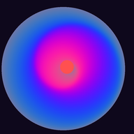

Zig Metamorphosis
Living, morphing video effects
- 🔒 Your video stays on this device. Nothing is uploaded.
- 📲 For true full screen and offline use: tap Share → Add to Home Screen.
- ⚠️ No flashing or strobing (every change is slower than once a second), but swirls and illusions can still feel intense. Stop if you feel dizzy or unwell.